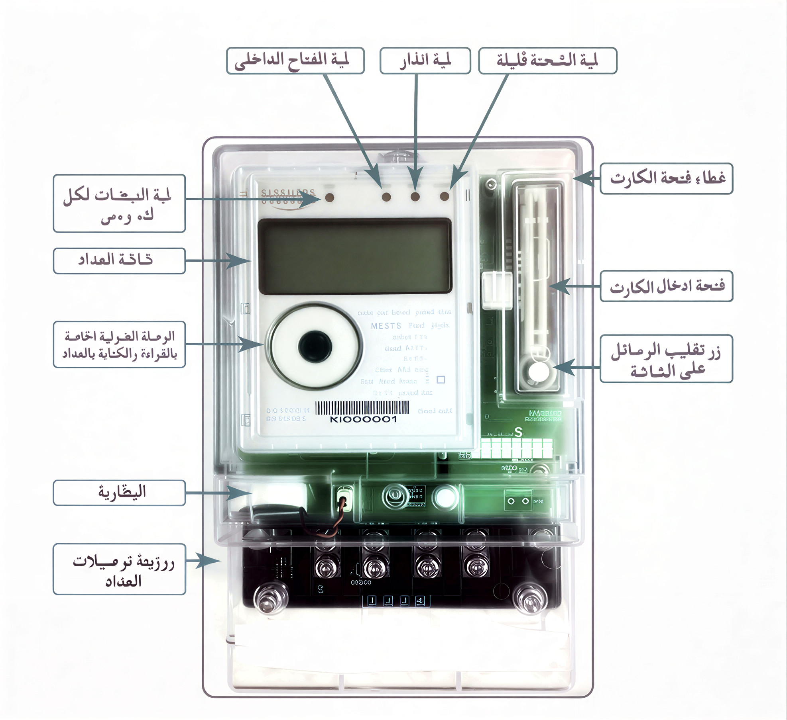

شرح عداد الكهرباء مسبوق الدفع

مكونات العداد بالتفصيل
لية الفتاح الداخلي
تستخدم لتشغيل وفصل التيار الكهربائي داخل الشقة أو المنزل. عند فصلها، ينقطع التيار عن جميع الأجهزة.
لية انذار
تصدر صوتاً عند اقتراب نفاد الرصيد (أقل من 50 جنيه) أو عند وجود عطل في التوصيلات أو زيادة في الأحمال.
لية التحفة قليلة
تستخدم لإعادة ضبط العداد بعد أعمال الصيانة أو عند فصل التيار الكهربائي لفترة طويلة.
غطاء فتحة الكارت
غطاء بلاستيكي لحماية فتحة إدخال الكارت من الأتربة والرطوبة والعوامل الجوية.
ثالثة المداد
الجزء الخاص بتوصيل الأسلاك الكهربائية الداخلة من مصدر الكهرباء والخارجة إلى المنزل.
فتحة ادخال الكارت
يتم إدخال كارت الشحن هنا مع اتجاه السهم لأعلى حتى تظهر رسالة تأكيد الشحن على الشاشة.
زر تقليل الرماط على الثابتة
للتحكم في القاطع الزائد وحماية الأجهزة من ارتفاع التيار. يستخدمه الفني في حالات الطوارئ.
الوصلة الغيرية
تستخدم من قبل فني الكهرباء للقراءات والبرمجة وضبط العداد. لا يعبث بها المستخدم.
البطارية
تحافظ على الوقت والبيانات المخزنة عند انقطاع التيار الكهربائي. تدوم لسنوات طويلة.
رزيمة ترميالت العفاد
مكان توصيل التأريض (الأرضي) لحماية العداد من الصواعق والتفريغ الكهربائي.
طريقة شحن العداد (خطوات مصورة)
من أي منفذ بيع (أكشاك، فوري، مكاتب البريد، أو موقع شركة الكهرباء الإلكتروني)
تأكد من نظافة الكارت وأن الشريحة الذهبية سليمة وغير متآكلة أو مخدوشة.
افتح الغطاء البلاستيكي الذي يحمي فتحة الكارت برفق.
أدخل الكارت في الفتحة (رقم 6) مع اتجاه السهم للداخل (السهم متجه لأعلى العادة).
ستظهر على الشاشة رسالة "SUCC" أو "ناجح" وتسمع صوت تنبيه من لية الانذار (رقم 2).
بعد التأكد من نجاح عملية الشحن، اسحب الكارت برفق وأغلق الغطاء.
شاشة العداد الرئيسية ستعرض الرصيد الجديد مضافاً إلى الرصيد القديم.
ملاحظة مهمة: إذا لم تظهر رسالة النجاح، كرر المحاولة مع التأكد من نظافة الكارت. إذا استمرت المشكلة، قد يكون الكارت تالفاً أو العداد يحتاج صيانة.
دليل استهلاك الأجهزة الكهربائية
أجهزة التبريد والتكييف
- تكييف 1.5 حصان 1.5 - 2.2 ك.و/س
- تكييف 2.25 حصان 2.2 - 3.0 ك.و/س
- ثلاجة 14-16 قدم 0.15 - 0.25 ك.و/س
- فريزر رأسي 0.2 - 0.3 ك.و/س
- مروحة سقف 0.07 - 0.1 ك.و/س
أجهزة المطبخ
- سخان مياه 1.5 - 2.5 ك.و/س
- غسالة أتوماتيك 0.5 - 1.0 ك.و/س
- ميكروويف 0.8 - 1.2 ك.و/س
- غلاية كهربائية 1.8 - 2.2 ك.و/س
- خلاط / كبة 0.3 - 0.5 ك.و/س
الترفيه والإضاءة
- تلفزيون LED 50" 0.1 - 0.15 ك.و/س
- رسيفر 0.02 - 0.05 ك.و/س
- لمبة LED 0.008 - 0.015 ك.و/س
- لمبة موفرة (فلورسنت) 0.015 - 0.025 ك.و/س
- راوتر الإنترنت 0.01 - 0.02 ك.و/س
أجهزة متنوعة
- كمبيوتر مكتبي 0.15 - 0.3 ك.و/س
- لاب توب 0.05 - 0.1 ك.و/س
- مكواة بخار 1.0 - 1.5 ك.و/س
- مكنسة كهربائية 1.2 - 1.8 ك.و/س
- شاحن موبايل 0.005 - 0.01 ك.و/س
كيف تحسب استهلاك الكهرباء بنفسك
المعادلة السحرية
الاستهلاك = القدرة × عدد الساعات
(بالكيلوواط/ساعة)
📝 مثال تطبيقي
🔹 جهاز: تكييف قدرته 2 كيلوواط
🔹 مدة التشغيل: 6 ساعات يومياً
🔹 الاستهلاك اليومي = 2 × 6 = 12 ك.و/س
🔹 الاستهلاك الشهري = 12 × 30 = 360 ك.و/شهر
🔹 التكلفة التقريبية = 360 × 1.95 ≈ 702 جنيه (في الشريحة الخامسة)
💡 نصائح عند الحساب
- اقرأ قدرة الجهاز من الملصق الخلفي (بالواط W) وحولها للكيلوواط (اقسم على 1000).
- إذا كان الجهاز يعمل بشكل متقطع (مثل الثلاجة)، قدر متوسط ساعات التشغيل الفعلية.
- لا تنس الأجهزة الصغيرة: شواحن، ريموتات، أجهزة في وضع الاستعداد (Standby).
- استخدم تطبيق "مُوفّر" لإدخال أجهزتك والحصول على حساب دقيق حسب الشرائح.
خطط ونصائح لتوفير الكهرباء
التكييف
اضبطه على 24° بدل 18° لتوفير 30% من استهلاكه. نظف الفلاتر كل شهر.
السخان
شغله قبل الاستخدام بنصف ساعة فقط، وافصله بعدها. العازل الحراري يقلل الفقد.
الإضاءة
استبدل كل اللمبات بـ LED، واعتمد على الإضاءة الطبيعية في النهار.
الأجهزة الإلكترونية
افصل الأجهزة من الفيشة (الريسيفر، الشواحن، الراوتر) عند عدم الاستخدام.
أوقات الذروة
شغل الأجهزة عالية الاستهلاك بعد الساعة 11 مساءً (خاصة الغسالة والمكواة).
الثلاجة
لا تفتحها كثيراً، وتأكد من إحكام الغلق. نظف الملف الخلفي من الأتربة.
📋 خطة توفير 30 يوم
• إطفاء اللمبات في الغرف الفارغة • فصل الشواحن • ضبط التكييف على 24°
• تشغيل الغسالة بعد 11م • تقليل استخدام السخان • غسيل الملابس بالماء البارد
• تنظيف فلاتر التكييف • تنظيف خلف الثلاجة • التحقق من إحكام الأبواب
• شراء لمبات LED • مؤقت زمني للسخان • جهاز توفير الطاقة (اختياري)
بتطبيق هذه الخطة، يمكنك توفير 20-40% من فاتورتك الشهرية!
الأسئلة الشائعة
ما الفرق بين الكيلوواط والكيلوواط/ساعة؟
الكيلوواط (kW) هو وحدة قياس قدرة الجهاز، أما الكيلوواط/ساعة (kWh) فهو كمية الطاقة المستهلكة عند تشغيل الجهاز بقدرة 1 كيلوواط لمدة ساعة.
كيف أعرف أن كارت الشحن تالف؟
إذا لم تظهر رسالة النجاح بعد عدة محاولات، وجربت كارتاً آخر وعمل، فكارتك الأول تالف. يمكنك استبداله في شركة الكهرباء.
ماذا يعني الرصيد 0 والكهرباء شغالة؟
العداد يعطي مهلة أمان (عادة 5-10 جنيه) كرصيد طوارئ. يجب الشحن فوراً لأن الرصيد سينقطع بعد انتهاء المهلة.
كيف أتجنب الوصول للشريحة السابعة؟
راقب استهلاكك من تطبيق مُوفّر، وإذا اقتربت من 950 ك.و، قلل من استخدام الأجهزة عالية الاستهلاك حتى نهاية الشهر.
هل الأجهزة في وضع الاستعداد تستهلك؟
نعم! الريسيفر، التلفزيون، الشواحن تستهلك 5-15 واط حتى وهي مغلقة. افصلها من الفيشة تماماً.
ما هي أوقات الذروة؟
عادة من 5 مساءً إلى 11 مساءً (فصل الصيف) حيث يزيد الحمل على الشبكة. يفضل تشغيل الأجهزة عالية الاستهلاك خارج هذه الأوقات.